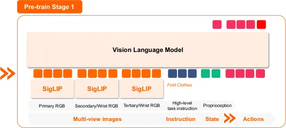
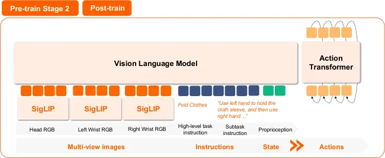
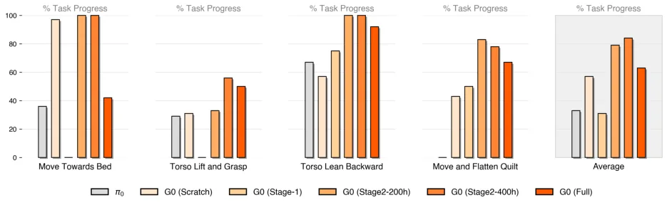
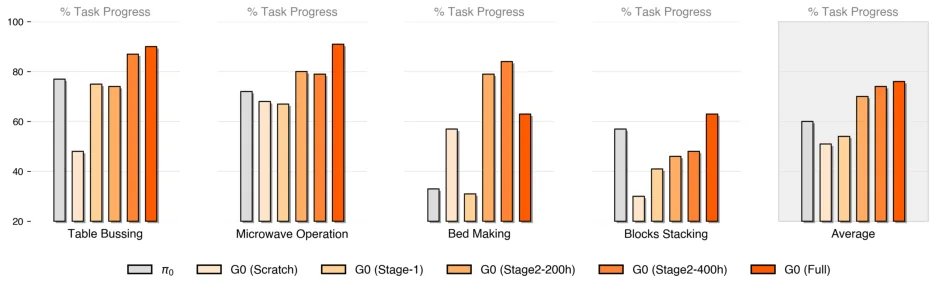
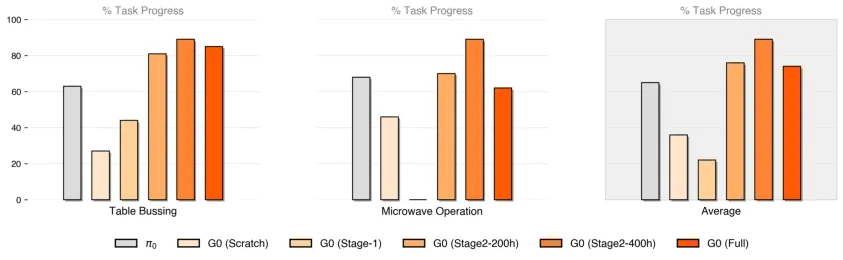

💡速记层 · 思想 / 逻辑 / 方法
默认读完就走的一层——只讲思想、逻辑、方法；效果只作验证。要核对原文/钻细节再看下面的「深读层」。
- Open-X Embodiment 等现有大规模数据集在受控/人工场景采集，存在严重 domain gap，导致真实世界泛化失效。
- 跨本体预训练（Cross-embodiment Stage-1）只能迁移通用 pick-and-place 等简单动作先验；当本体差异大时不仅无益，甚至有害（如底盘、躯干控制）。
- 关键缺失：专属于目标平台的单一本体、真实场景、精细子任务标注数据。Stage-2 预训练正好填补这个缺口。
- 高层任务规划（VLM）与低层动作执行（VLA）各司其职、异步运行：VLM 以 2 Hz 发子任务指令，VLA 以 200 Hz 执行闭环控制。
- G0-VLM 经过微调后指令精度超 Gemini-2.5-pro 约 50%+，证明通用模型不能直接用于机器人原子动作规划，必须领域适配。
G0 (Full) 在 4 个基准任务的平均 progress score 最高；G0-VLM 微调后指令精度 74–83%，大幅超过 Gemini-2.5-pro (16–55%) 和 Qwen2.5-VL 系列。消融证明：Stage-2 单一本体预训练是关键；Stage-1 跨本体预训练对底盘/躯干等本体专属动作帮助有限甚至有害。
想看具体数字（点开）
- G0 (Full) vs G0 (Scratch)：各任务平均 progress score 约 75% vs ~55%（由图估算）。
- Few-shot（20 条）：Stage-2 预训练模型明显优于 Stage-1 或从头训练。
- Bed Making 底盘控制：Stage-1 / π0 甚至低于从头训练（embodiment gap 太大）。
- G0-VLM 在 Table Bussing：83.3% vs Gemini-2.5-pro 32.0%。
- G0-VLM 在 Microwave Operation：74.2% vs Gemini-2.5-pro 15.8%。
Track A（移动操作 VLA）直接命中：这是国内产业界在移动双臂机器人上落地双系统 VLA 的代表工作，500h 开放世界数据集 + 三阶段训练课程可直接参考。关键教训是「Stage-2 单一本体预训练比 Stage-1 跨本体预训练更重要」，对设计自己训练流程有直接指导价值。Track B（足式控制算法）不相关——本文不涉及 locomotion。
◆核心观点 · 证据
每条 = 中文论点 + 📍页/节 + 🔤逐字原文(Ctrl-F 锚点) + 🀄译文 + 💡解读。
Despite significant progress, a substantial bottleneck persists due to the scarcity of large-scale, high-quality, open-world robot data. Existing datasets, exemplified by Open-X Embodiment, are predominantly restricted by their limited task realism and insufficient environmental richness.
Galaxea Open-World Dataset comprises 500 hours of high-fidelity data systematically gathered in real-world scenarios where human individuals live and work, incorporating more than 150 distinct tasks across 50 different scenes. Uniquely, Galaxea Open-World Dataset was consistently captured using a single robotic embodiment, thereby ensuring uniformity and reliability.
It contains 100K demonstration trajectories spanning 150 task categories performed in 50 distinct real-world scenes. These demonstrations cover more than 1,600 unique objects and 58 operational skills, ranging from fine-grained pick-and-place to coordinated whole-body manipulation.

G0 capitalizes on System 2 (G0-VLM) for generalized multimodal planning, directing System 1 (G0-VLA) to perform precise action execution. These two models run asynchronously at different frequencies, enabling both efficient training and real-world deployment.


we propose a 3-stage training curriculum for G0-VLA: (1) cross-embodiment pre-training on large-scale unlabeled datasets to acquire general world knowledge priors; (2) single-embodiment pre-training on our Galaxea Open-World Dataset to specialize in the perceptual-action pairs on the target platform; and (3) post-training on high-quality task demonstrations for the mastery of specific complex skills.

models trained with cross-embodiment data (e.g., Stage-1 pre-training and π0) demonstrate substantially weaker instruction following for chassis-related actions and less accurate torso control. In some cases, they even underperform compared to models trained from scratch. We hypothesize that the large embodiment gap between our robot and those in the OXE dataset used for Stage-1 pre-training hinders the model's ability to acquire embodiment-specific skills.


Overall, G0 (Full) achieves the highest average progress score. In particular, it demonstrates superior object-picking ability in Table Bussing, Microwave Operation, and Bed Making. G0 (Stage-2 400h) and G0 (Stage-2 200h) achieve the best performance in language following and action consistency, as well as the strongest whole-body control capabilities.
Table 1 demonstrates that our fine-tuned model surpasses baseline accuracy by over 50%, with task-specific tuning enabling language instructions that are directly executable by VLAs. This validates our key hypothesis that robotic applications require not just general-purpose vision-language understanding, but precisely aligned action primitives through domain adaptation.
G0-VLA first embeds the robot's visual observations and language instructions with the pre-trained VLM, then generates continuous action with an flow matching action expert conditioned on VLM's KV cache.
To enable the VLM's language model backbone to predict robot actions, we adopt FAST tokenizer as our action tokenizer, which converts raw continuous action chunks into a sequence of discrete indices. In this way, we can train VLM with a standard cross-entropy loss to predict the next action tokens in an autoregressive fashion.
⎘开源状态（实时核查，截至 2026-06）
论文发布时（2025-08）承诺「数周内开源」；目前已在 OpenGalaxea 组织（GitHub + HuggingFace）正式发布，并持续更新至 G0-Plus。
- 代码
- 已开源 github.com/OpenGalaxea/GalaxeaVLA（双许可证：2026-01-04 前 Apache-2.0；之后 G0 PLUS Community License，非商业免费，商用需另授权）。含训练/微调/推理代码，LeRobot 格式兼容。
- 权重
- 已开源 HuggingFace OpenGalaxea 组织下：
G0_3B_base（Stage-2 预训练）、G0Plus_3B_base（2k+ 小时数据升级版，2026-01 发布）、G0Tiny_250M_base（轻量边缘版）、G0Plus_3B-pick_and_place（部署就绪版）。 - 数据集
- 门控开放 HF: OpenGalaxea/Galaxea-Open-World-Dataset——CC BY-NC-SA 4.0，需登录并同意隐私政策后访问。格式：LeRobot v2.1，2.87 TB，227 个 tar.gz 压缩包，4 路摄像头视频（720×1280, 15 fps, AV1 编码）+ parquet 状态/动作数据。
GalaxeaVLA 仓库从 Apache-2.0（2026-01-04 前） 切换到 G0 PLUS Community License（仅非商业）。若需商业部署，需向 Galaxea 申请单独授权。数据集 CC BY-NC-SA 4.0 同样限制商业使用。
2026 年 1 月发布 G0-Plus，预训练数据从 500h 扩展至 2000+ 小时机器人遥操作数据 + 网络数据，支持 OpenPI 兼容配置。同时提供轻量版 G0Tiny（250M 参数）供边缘设备部署。
The Galaxea Open-World Dataset and the models will be open-sourced in the coming weeks. This release represents Galaxea team's first step in open-sourcing robot datasets and models.
⚖批判 · 评级
① 「单一本体预训练 > 跨本体预训练」这一反直觉结论有扎实的消融支撑，且与跨本体本体差异大小强相关——对设计自己的预训练流程有直接指导意义。② 500h 真实开放世界数据集（含 100K 轨迹、1600+ 物体）及双系统部署细节在国内产业界较为罕见地公开，数据集本身具有独立研究价值。③ G0-VLM 用 DeepSeek-R1 合成高层指令数据的方案成本低、可复现，是一种可借鉴的「低成本 VLM 领域适配」方法。④ 已落地真实移动双臂机器人（R1 Lite），不止是仿真验证。
① 评测设计自建、可信度有限：4 个基准均为 Galaxea 自家任务，使用 progress score（部分得分制），每任务仅 10 次重复，绝对成功率未披露。② 与先进工作对比不足：仅将 π0 作为 VLA 基线，未与 RDT-1B、OpenVLA 等同类工作系统对比。③ G0-VLM 评测仅测「指令精度」，未测端到端成功率——两个系统未做联合评测，很难判断整体系统性能。④ 数据集门控访问且 2.87 TB 体量，在带宽受限地区使用门槛较高。⑤ Stage-1 跨本体预训练的负面影响的机制未被深入分析（仅假设为 embodiment gap，未给出解决方案）。
评级：Important 开放世界数据集 + 「单一本体预训练」关键洞见 + 真实部署的组合，是国内产业界移动操作 VLA 的标志性工作，但评测深度和与先进工作的横向对比不足，不达 Breakthrough 级。